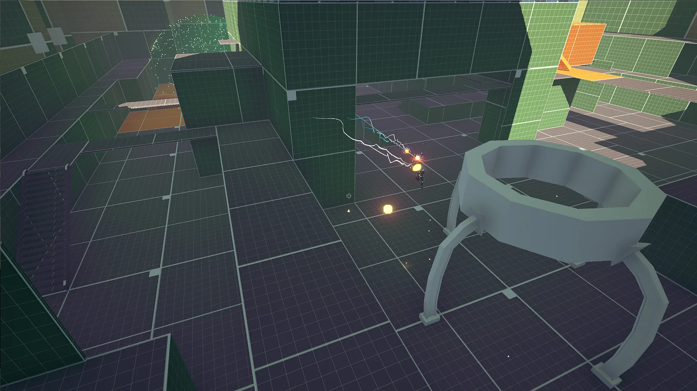
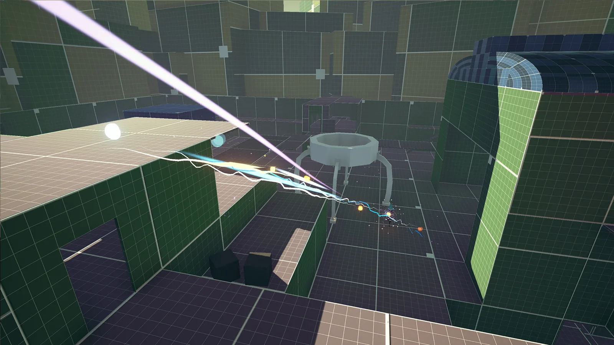
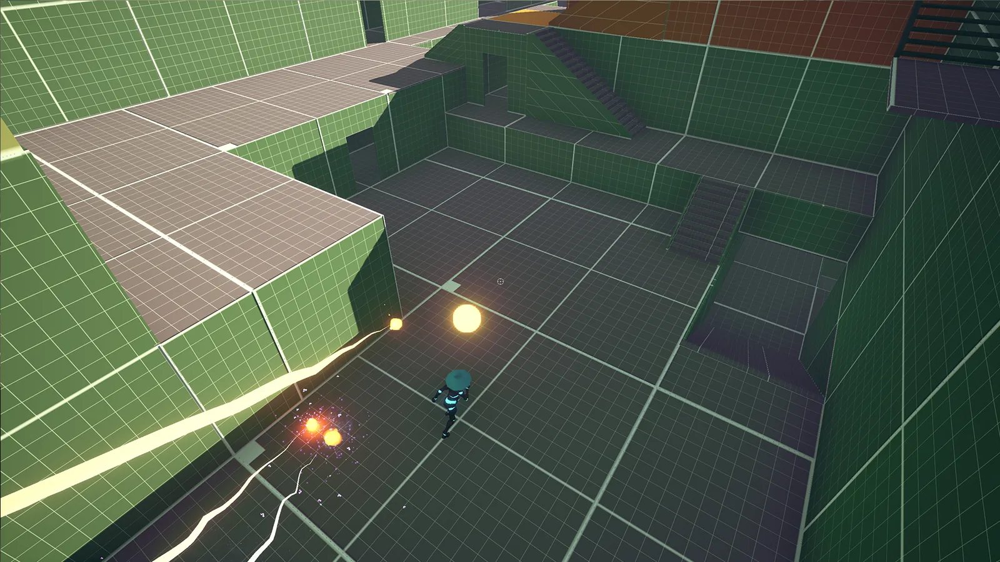
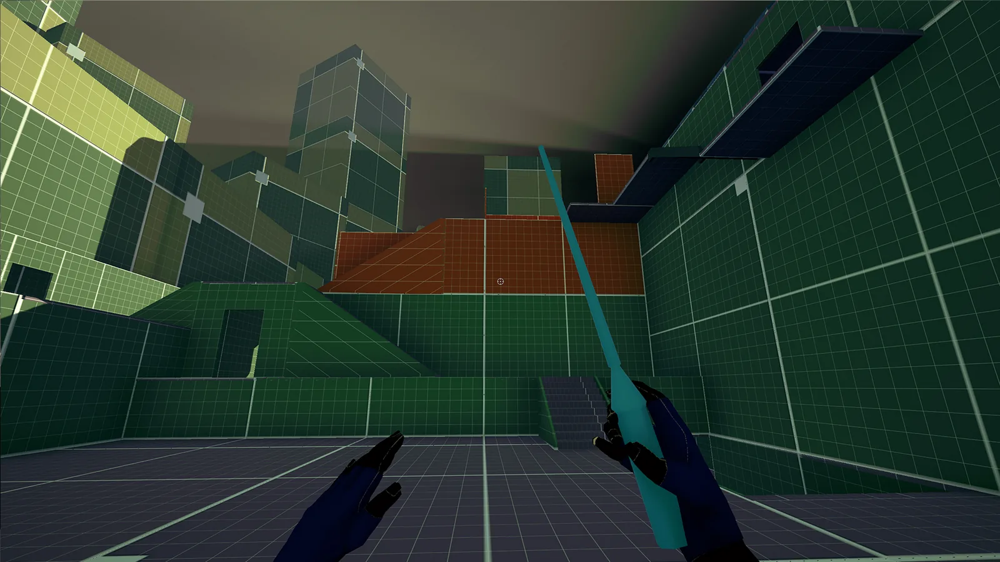
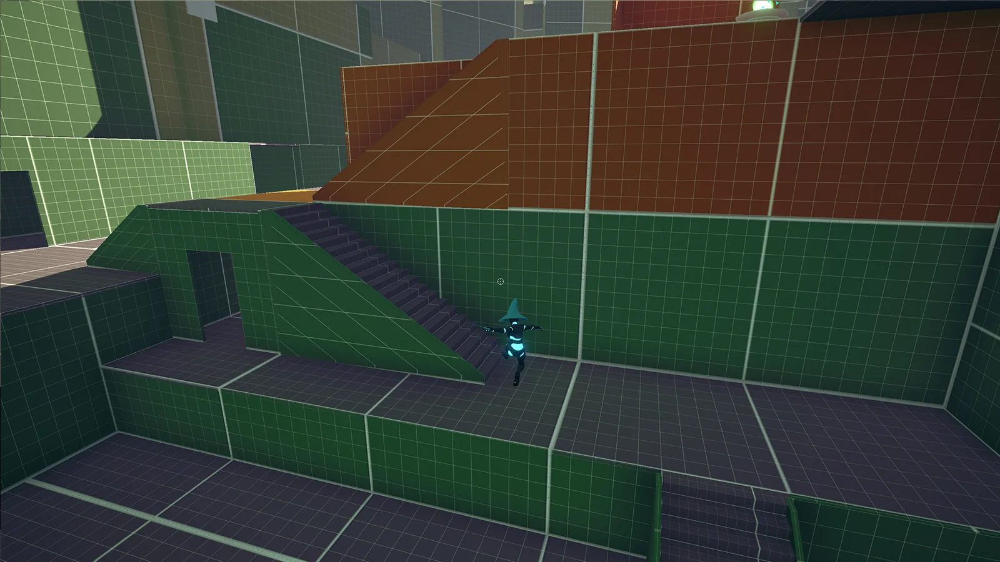
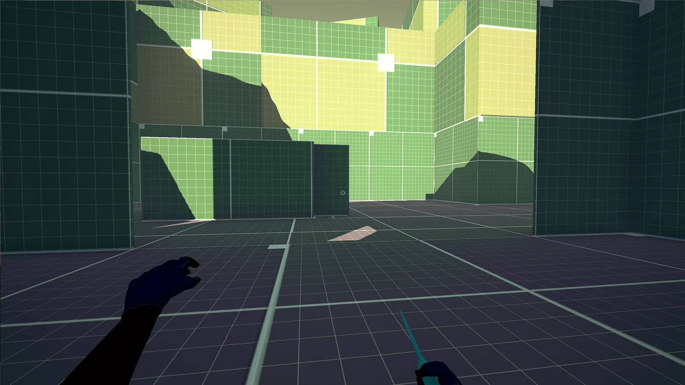
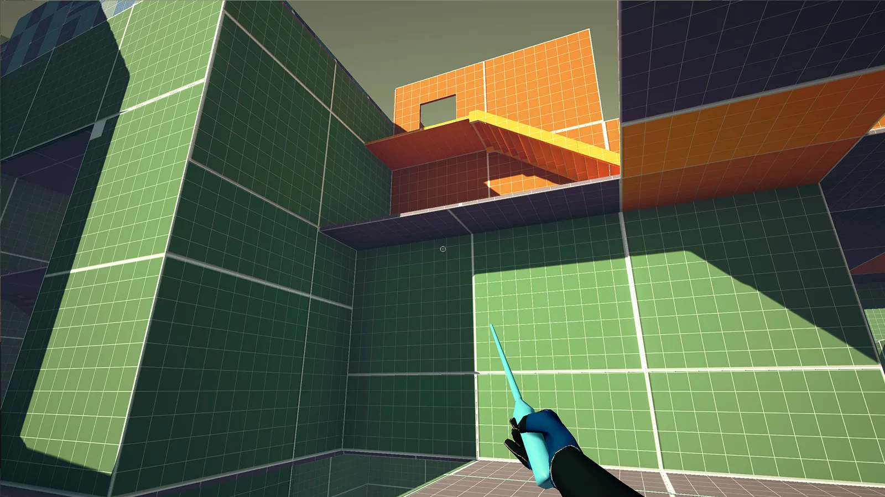
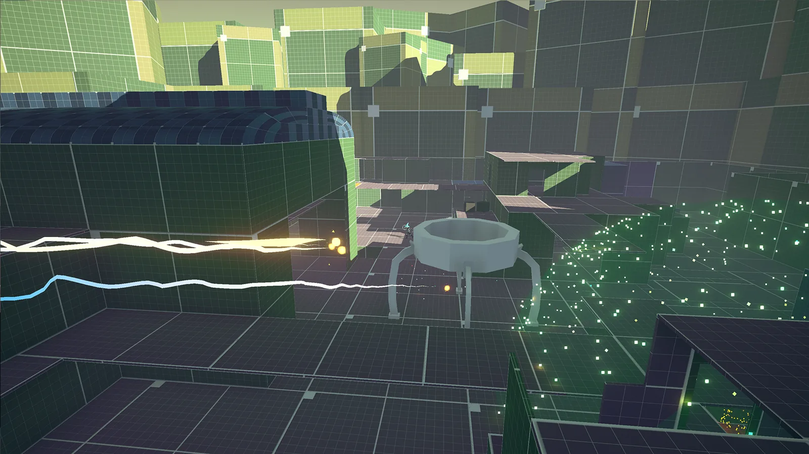
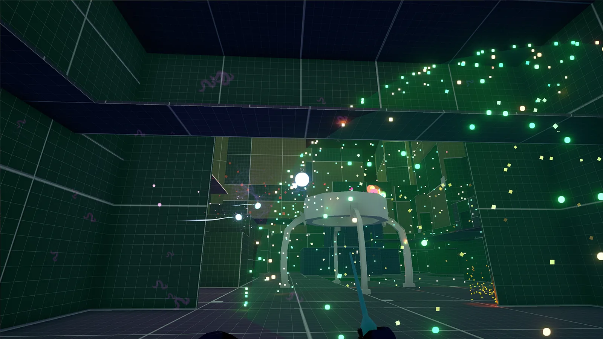

Old World
- Year
- 2016
- Platform
- PC
- Engine
- Unreal Engine









A level for my multiplayer game, Fight The Light, which constantly switches between asymmetrical and symmetrical play.
My role
I had to design a level that works for both kinds of play, with varying abilities. Old World is the asymmetrical map.
What I did
- Designed an asymmetrical map with varying levels of verticality, using both open and enclosed environments to support flying and floor movement
- Added an underground section so the Wizards can travel safely between points
- Cut the map to a third of its originally planned size, making the game quicker and more fun to play